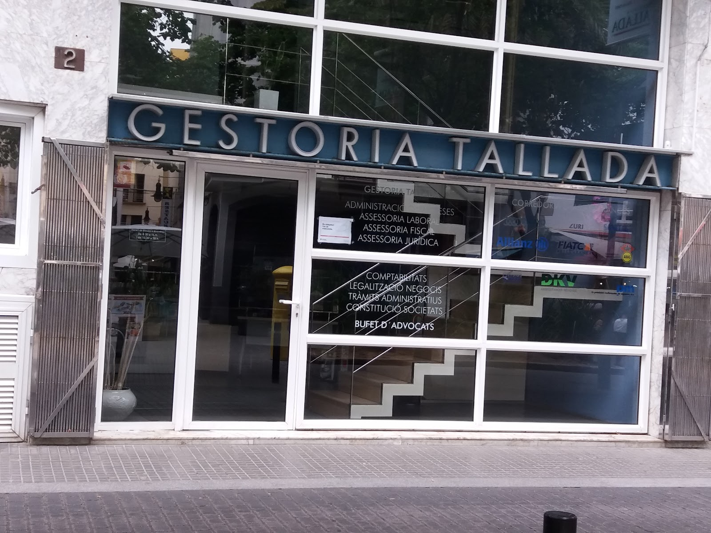
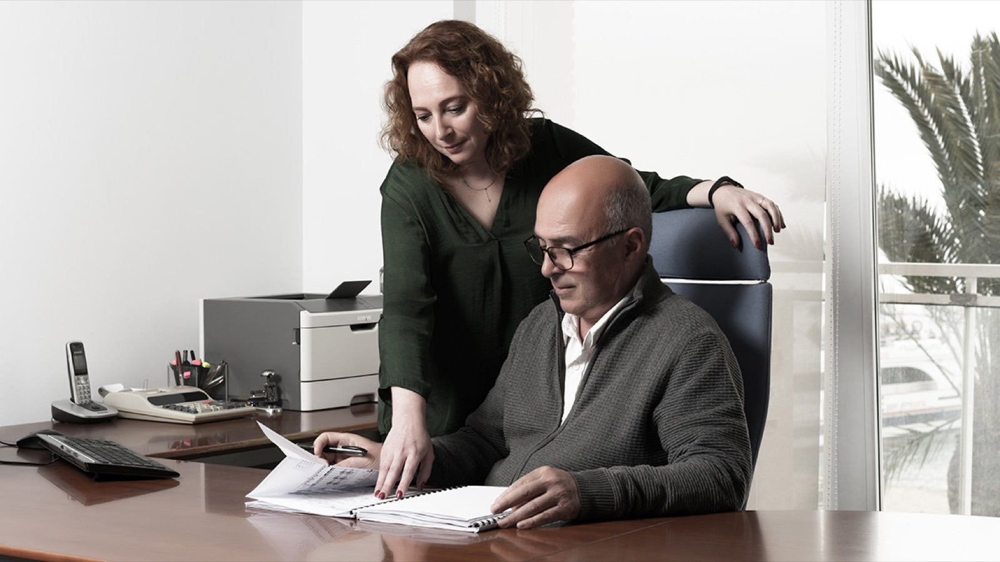
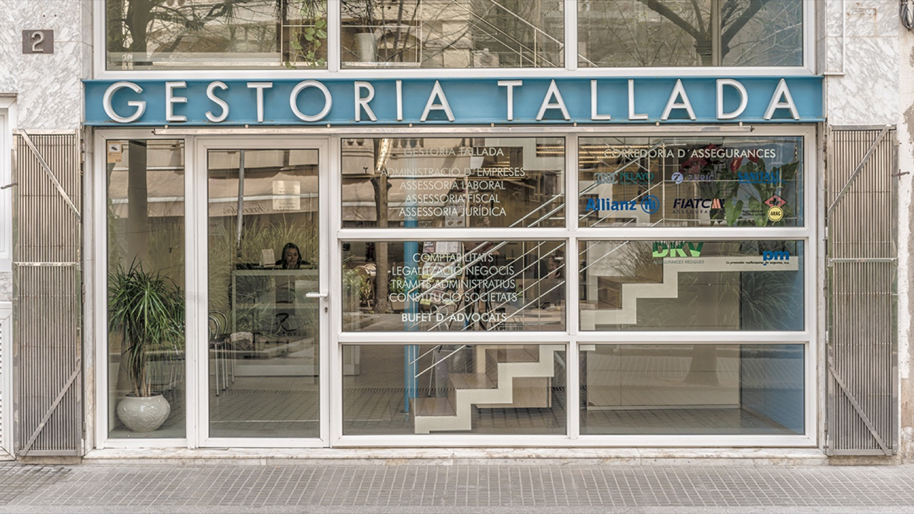

Gestoría · Asesoría · Consultoría · Seguros
GestoriaTallada
Servicio integral de asesoramiento, planificación y gestión personalizada en Lloret de Mar. Para empresas y particulares, desde 1960.
- Fundada
- 1960
- Ámbitos
- 7
- Seguros
- 13

01 · La casa
Una empresa familiar
| Nº | Fecha | Concepto |
|---|---|---|
| 001 | 1960 | Lluís Tallada Bernat funda la gestoría en Lloret de Mar. |
| 002 | 2010 | Cincuenta aniversario de la casa. |
| 003 | +25 años | Desde hace más de veinticinco años la dirige su hija, María Carmen Tallada Mateu. |
| 004 | Hoy | Gestores, asesores y economistas al servicio de empresas y particulares, en la Plaça Espanya. |
«Atención personalizada y responsable, con un equipo de profesionales de gran experiencia y en constante formación, siempre al servicio de nuestros clientes.»
Nuestro objetivo es cubrir con eficacia las necesidades de nuestros clientes, tanto empresas como particulares, en todos los ámbitos: gestoría, laboral, jurídico, tributario-fiscal, mercantil, contable y seguros.

02 · Interactivo
La ventanilla
¿Qué necesita resolver? Pulse su caso en el dispensador y llévese el ticket con los trámites que le llevamos.
Pulse un botón del dispensador: el ticket saldrá por la ranura.
03 · Calendario del contribuyente
El próximo plazo
Los vencimientos generales de la Agencia Tributaria, con la cuenta atrás. Pase las hojas para ver los siguientes.
—días
—
—
Plazos generales para el ejercicio natural; si el último día es festivo o fin de semana, se traslada al siguiente hábil. Cada caso es distinto: consúltenos el suyo.
04 · Servicios
El archivador
Gestores, asesores y economistas para ofrecer un servicio completo y eficaz en todos nuestros ámbitos. Abra cada cajón.
05 · Correduría de seguros
Le cubrimos
Atención personalizada a empresas y particulares, con la garantía y seguridad de los grupos aseguradores más importantes del mercado.
Pida su presupuesto06 · La oficina
En la plaza
Nuestro escaparate en la Plaça Espanya y el día a día del despacho. Pase las fichas.
07 · Clientes de toda la vida
«Muy profesionales y precios razonables. No cambio. Me hacen la declaración desde hace 35 años y ahora también me llevan la contabilidad de mi empresa. ¡Encantada!»
Reseña en Google
«Llevo al menos 30 años yendo a ellos, siempre muy buen trato y buen trabajo.»
Reseña en Google
08 · Contacto
Plaça Espanya, 2
- Plaça Espanya, 217310 Lloret de Mar (Girona)
- (+34) 972 36 45 64Llámenos en horario de oficina
- gestallada@gestoriatallada.comLe respondemos por correo
- Área de clientesAcceso a su documentación
| Lunes | 8:30 – 16:30 |
|---|---|
| Martes | 8:30 – 16:30 |
| Miércoles | 8:30 – 16:30 |
| Jueves | 8:30 – 16:30 |
| Viernes | 8:30 – 15:00 |
| Sábado | Cerrado |
| Domingo | Cerrado |
